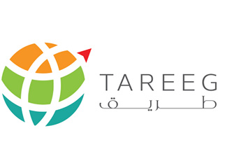
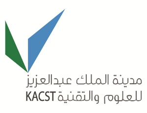

Louai Alarabi
* General Authority of Statistics, Riyadh, Saudi Arabia
Office: 1084
lmarabi@uqu.edu.sa
louai.alarabi@ieee.org
lalarabi@acm.org
louai@cs.umn.edu
Louai Alarabi holds a Ph.D. degree from the Computer Science and Engineering Department at the University of Minnesota Twin Cities. He is currently an assistant professor at UMM-ALQURA University in the Department of Computer Science. He is a member of the Data Management Lab supervised by Prof. Mohamed Mokbel. He received his B.SC at Umm Al-Qura University in Computer Science. His research interest lies in the board area of databases with the focus on big data management and spatio-temporal computing. Louai enjoys building systems; he invented and developed several Big Data systems, including Data Lake for General Authority of Statistics, ST-Hadoop: a comprehensive distributed spatio-temporal data management system, TAREEG: a distributed MapReduce framework for extracting a spatial feature from the map, MNTG: Traffic generator, SHAREK: A ride sharing system , and TAGHREED: A microblogs Management system. His research was recognized by the first place and a gold medal award in student research competition at ACM SIGSPATIAL/GIS 2018, among best paper award at SSTD 2017, Finalist of student research competition at ACM SIGMOD 2017, and best demonstration award at U-Spatial Symposium 2014. His research was funded by a collaboration with UMM-AlQURA University, KACST GIS Technology Innovation Center, King Abdulaziz City for Science and Technology (KACST), and the University of Minnesota. Prior role or while on leave from UQU University including Director of Statistical Database and Data Warehouse at General Authority of Statistics, Riyadh, KSA. Big Data Consultant at General Authority of Statistics, Riyadh, KSA. Software Engineer at Advanced Electronics Company in Riyadh, KSA. Research Assistant at the KACST GIS Innovation Center, KSA. Teaching Assistant at the University of Minnesota, USA.
 orcid.org/0000-0001-7746-3618
orcid.org/0000-0001-7746-3618Experience
Director of Statistical Database and Data Warehouse
General Authority for Statistics (GASTAT) is keen on embarking on a Big Data Analytics journey and becoming one of the leading modern statistical institutes worldwide in terms of innovation, time to market, user delight, and service cost, despite its vast size and scale. The current GASTAT model of data processing focuses on reporting needs and captures data provided from external entities and surveys. GASTAT needs to conduct periodic censuses on population, housing, agriculture, fisheries, poultry, business, industry, and other sectors of the economy, creating massive amounts of data. Such data must be collected, compiled, analyzed, and published on statistical platforms. The ability to handle complex data from semi-structured and unstructured data sources and conventional structural data processing maximizes the value potential and quality of services in operational efficiency in the digital age. Managing terabytes of data efficiently, GASTAT has the potential to be a trendsetter for smart statistical data empowering representatives of GASTAT at every level with analytics, thus standardizing and speeding up the decision-making process.
Consultant a Big Data Expert
Chairman of Computer Science Department
Assistant Professor
Teaching Assistant
Responsibilities included : Preparing and discussing homework exercises and programming assignments, delivering lab tutorials and recitations, and grading exams and quizzes.
Courses: CSCI-4061:Operating System, and CSCI-4707:Practice of Database Systems
Research Assistant
Member of the Data Management group doing research in microblog data management and big spatio-temporal data processing, building these systems as a proof of concept using and extending SpatialHadoop to support processing and indexing the temporal dimension, document the outputs as research papers, and giving demonstrations for business purposes.
Teaching Assistant
Responsibilities included : Preparing and discussing homework exercises and programming assignments, delivering lab tutorials and recitations, and grading exams and quizzes, finally publishing a free online tutorial of Clips an artificial intelligent language for students.
Courses: Computer Graphics, Advanced Programming Languages, Structured Programming Languages, Expert System , and Software Engineering.
Software Enginner
Member of a research and development team mainly working on implementing a DLMS protocol on ARM Processor. Also, developed Electronic Gateway desktop application called Parameterization Software PS, where it has designed and developed as a second generation of Digital Meters for Saudi Electrical Company under the Authority of AEC.
Education
Ph.D. University of Minnesota
GPA: 3.604
M.S. University of Minnesota
GPA: 3.515
B.Sc. UMM-AlQURA University
GPA: 3.56
Publications
Journals
- Sultan Daud Khan, Louai Alarabi, Saleh Basalamah.
An Encoder–Decoder Deep Learning Framework for Building Footprints Extraction from Aerial Imagery.
Arabian Journal for Science and Engineering. 2022
- Rasha Sleem, Nagham Mekky, Shaker El-Sappagh, Louai Alarabi, Noha A. Hikal, Mohammed Elmogy.
Enhancing Task Assignment in Crowdsensing Systems Based on Sensing Intervals and Location.
CMC-Computers, Materials & Continua, 71(3), 5619–5638. 14 January 2022
- Nora El-Rashidy, Tamer Abuhmed, Louai Alarabi, Hazem M. El-Bakry, Samir Abdelrazek, Farman Ali, and Shaker El-Sappagh.
Sepsis prediction in intensive care unit based on genetic feature optimization and stacked deep ensemble learning.
Neural Computing and Applications, Springer 03 Nov 2021 ,https://doi.org/10.1007/s00521-021-06631-1.
- Sultan Daud Khan, Louai Alarabi, Saleh Basalamah.
A Unified Deep Learning Framework of Multi-scale Detectors for Geo-spatial Object Detection in High-Resolution Satellite Images
Arabian Journal for Science and Engineering, Springer22 Oct 2021 , https://doi.org/10.1007/s13369-021-06288-x
- Samah Abuayeid, Louai Alarabi.
Comparative Analysis of Spark and Ignite for Big Spatial Data Processing
International Journal of Advanced Computer Science and Applications(IJACSA), Volume 12 Issue 9, 2021.
- hmed H, Alarabi L, El-Sappagh S, Soliman H, Elmogy M.
Genetic variations analysis for complex brain disease diagnosis using machine learning techniques: opportunities and hurdles
PeerJ Computer Science 7:e697 2021
- Louai Alarabi, Saleh M. Basalamah, Abdeltawab M. Hendawi, Mohammed Abdalla
TraceAll: A Real-Time Processing for Contact Tracing Using Indoor Trajectories.
I. Inf. 12(5): 202 2021
- Sultan Daud Khan, Louai Alarabi, Saleh M. Basalamah.
Deep Hybrid Network for Land Cover Semantic Segmentation in High-Spatial Resolution Satellite Images.
Inf. 12(6): 230 2021
- Naira Elazab, Shaker El-Sappagh, Ahmed Atwan, Hassan Soliman, Mohammed Elmogy,Louai Alarabi, Nagham Mekky.
Overlapping Shadow Rendering for Outdoor Augmented Reality.
CMC-COMPUTERS MATERIALS & CONTINUA 67 (2), 1915-1932 2021
- Fawaz Albatati and Louai Alarabi.
Labeling Big Spatial Data: A Case Study of New York Taxi Limousine
Dataset.
International Journal of Computer Science & Network Security 21 (6), 207-212 2021
- N. Shoaip, A. Rezk, S. El-Sappagh, Louai Alarabi, S. Barakat, and M. Elmogy .
A comprehensive fuzzy ontology-based decision support system for alzheimer’s disease diagnosis.
IEEE ACCESS,2021
- Amr Mohamed AbdelAziz, Louai Alarabi, Saleh Basalamah, and Abdeltawab Hendawi. A Multi-Objective Optimization Method for Hospital Admission Problem—A Case Study on Covid-19 Patients. Algorithms,2021
- Mohammed Abdalla, Louai Alarabi, and Abdeltawab Hendawi Crisis management art from the
risks to the control: A review of methods and directions. Information,2021
- Louai Alarabi.
Microblogs Content Management, Retrieval, Analysis and Visualization
International Journal of Computer Science & Network Security Vol. 20 No. 12 pp. 21-29 2020
- Sultan Daud Khan, Louai Alarabi, and Saleh BasalamahToward smart lockdown: A novel approach
for covid-19 hotspots prediction using a deep hybrid neural network. Computers,2020
- Shurug Alseady, Abdullah Baz, Tahani Alsubait, Louai Alarabi, Hosam Alhakami
Towards Security Challenges to Internet-of-Things: Big Data, Networks, and Applications
International Journal of Computer Science & Network Security Vol. 20 No. 11 pp. 131-141 2020
- Bin Cao, Chenyu Hou, Liwei Zhao, Louai Alarabi, Jing Fan, Mohamed F. Mokbel, and Anas BasalamahSharek*: A scalable matching method for dynamic ride sharing Geoinformatica, Springer US, July 2020
- Louai Alarabi, Mohamed F. Mokbel , Mashaal Musleh ST-Hadoop: a MapReduce framework for spatio-temporal data Geoinformatica, Springer US, July 2018
- Xiaochuang Yao, Mohamed F. Mokbel, Sijing Ye, Guoqing Li, Louai Alarabi , Ahmed Eldawy, Zuliang Zhao, Long Zhao, and Dehai Zhu. LandQv2: A MapReduce-Based System for Processing Arable Land Quality Big Data International Journal of Geo-Information, ISPRS Int. J. Geo-Inf. 2018, 7(7), 271, July 2018
- Xiaochuang Yao, Mohamed F. Mokbel, Louai Alarabi, Ahmed Eldawy, Jianyu Yang, Wenju Yun, Lin Li, Sijing Ye, Dehai Zhu Spatial coding-based approach for partitioning big spatial data in Hadoop Journal of Computers & Geosciences, Volume 106, September 2017
- Amr Magdy, Mashaal Musleh, Kareem Tarek, Louai Alarabi, Saif Al-Harthi, Hicham G. Elmongui, Thanaa M. Ghanem, Sohaib Ghani, Mohamed F. Mokbel "Taqreer: A System for Spatio-temporal Analysis on Microblogs" IEEE Data Eng. Bull. 38(2): 68-76 (2015)
Conference Proceeding
- Louai Alarabi, Saleh Basalamah, Mohammed Abdalla and Abdeltawab Hendawi .
A Holistic Spatial Platform For Managing Infectious Diseases, Case Study on COVID-19 Pandemic.
IEEE BIG DATA, The 6th IEEE International Workshop on Big Spatial Data (BSD 2021)BSD-2021
- shahd mosa qari, Manal Abdulrahman Alharthi, Leena Solayman Houmaidan, Raghad Mohammed Alqurashi, Ashwaq Ahmed Almalki, Louai Alarabi.
Grid File index in Big Data Crowdsourcing.
International Conference on Computing and Information TechnologyICCIT-2021, Tabuk, KSA
- Louai Alarabi, Mohamed F. Mokbel , Mashaal Musleh ST-Hadoop: A MapReduce Framework for Spatio-temporal Data International Symposium on Spatial and Temporal Databases August 21-23, 2017, Washington, D.C, USA SSTD 2017, Washington, D.C, USA
- Ahmed Eldawy, Louai Alarabi, Mohamed F. Mokbel Spatial Partitioning Techniques in SpatialHadoop 41st International Conference on Very Large Data Bases, August 31st - September 4th 2015 VLDB 2015, Kohala Coast,Hawaii
- Bin Cao, Louai Alarabi, Mohamed F. Mokbel, Anas Basalamah SHAREK: A Scalable Dynamic Ride Sharing System 16th IEEE International Conference on Mobile Data Management 15 - 18 June, 2015 MDM 2015, Pittsburgh, Pennsylvania, USA
- Louai Alarabi, Ahmed Eldawy, Rami Alghamdi, Mohamed F. Mokbel "TAREEG: A MapReduce-Based System for Extracting Spatial Data from OpenStreetMap 22nd ACM SIGSPATIAL International Conference on Advances in Geographic Information Systems (ACM SIGSPATIAL GIS 2014) SIGSPATIAL 2014, , Dallas, TX, USA
- Amr Magdy, Louai Alarabi , Saif Al-Harthi , Mashaal Musleh , Thanaa M.Ghanem, Sohaib Ghani, Mohamed F. Mokbel "Taghreed: A System for Querying, Analyzing, and Visualizing Geotagged Microblogs 22nd ACM SIGSPATIAL International Conference on Advances in Geographic Information Systems (ACM SIGSPATIAL GIS 2014) SIGSPATIAL 2014, , Dallas, TX, USA
- Mohamed F. Mokbel, Louai Alarabi, Jie Bao, Ahmed Eldawy, Amr Magdy, Mohamed Sarwat, Ethan Waytas, and Steven Yackel. "MNTG: An Extensible Web-based Traffic Generator". In Proceedings of the 13th International Symposium on Spatial and Temporal Databases, SSTD 2013, Munich, Germany, August 2013.
Conference Demonstration
- Louai Alarabi, Mohamed F. Mokbel "A demonstration of summit: a scalable Data Management Framework for Massive Moving Objects Data". Proceedings of The 21st IEEE International Conference on Mobile Data Management June 30 - July 3, 2020, Versailles, FranceMDM 2020
- Louai Alarabi, Mohamed F. Mokbel "A Demonstration of ST-Hadoop: A MapReduce Framework for Big Spatio-temporal Data". Proceedings of the VLDB Endowment, Vol. 10, No. 12, VLDB 2017 Munich, Germany, from August 28th to September 1, 2017
- Louai Alarabi, Mohamed F. Mokbel, Bin Cao, Liwei Zhao, Anas Basalamah "A Demonstration of SHAREK: An Efficient Matching Framework for Ride Sharing Systems". 24th ACM SIGSPATIAL International Conference on Advances in Geographic Information Systems (ACM SIGSPATIAL GIS 2016), SIGSPATIAL 2016, San Francisco Bay Area, California, USA
- Amr Magdy, Louai Alarabi, Saif Al-Harthi, Mashaal Musleh, Thanaa M. Ghanem, Sohaib Ghani, Saleh Basalamah, and Mohamed F. Mokbel. Demonstration of Taghreed: A System for Querying, Analyzing, and Visualizing Geotagged Microblogs. In Proceedings of the IEEE International Conference on Data Engineering, ICDE 2015, Seoul, South Korea, April, 2015.
- Louai Alarabi, Ahmed Eldawy, Rami Alghamdi, Mohamed F. Mokbel. "TAREEG: A MapReduce-Based Web Service for Extracting Spatial Data from OpenStreetMap In Proceedings of ACM SIGMOD Conference on Management of Data, SIGMOD 2014, Snowbird, UT, USA, Jun, 2014.
- Mohamed F. Mokbel, Louai Alarabi, Jie Bao, Ahmed Eldawy, Amr Magdy, Mohamed Sarwat, Ethan Waytas, and Steven Yackel. "A Demonstration of MNTG - A Web-based Road Network Traffic Generator". In the IEEE International Conference on Data Engineering, ICDE 2014, Chicago, USA, April, 2014.
- Louai Alarabi, Mohamed F. Mokbel "A Demonstration of ST-Hadoop: A MapReduce Framework for Big Spatio-temporal Data". Proceedings of the VLDB Endowment, Vol. 10, No. 12, VLDB 2017 Munich, Germany, from August 28th to September 1, 2017
Workshop & Abstract
- Louai Alarabi"Summit: A scalable system for massive trajectory data managment". Proceedings of SIGSPATIAL 2018 Student Research Competition Nov 5-8 2018, Seattle, Washington, USA
- Louai Alarabi"ST-Hadoop: A MapReduce Framework for Big Spatio-temporal Data". Proceedings of SIGMOD 2017 pages 40–42. Student Research Competition May 14-19 2017, Chicago, IL, USA SIGMOD 2017, Chicago, IL, USA
Newsletter
- Louai Alarabi "Summit: A scalable system for massive trajectory data managment". SIGSPATIAL Special: Volume 10 Issue 3, November 2018
Projects
-
ST-Hadoop is a MapReduce framework that acknowledges the fact that space and time play a crucial role in query processing. ST-Hadoop is an open-source extension of a Hadoop framework that injects the spatiotemporal awareness in the code base of four layers inside SpatialHadoop, namely, language, indexing, MapReduce, and operations layers. The spatio-temporal indexing techniques inside ST-Hadoop primarily tuned to provide the accommodation of new updated dataset efficiently without the need to rebuild its index. The key point behind the performance gain of ST-Hadoop is the idea of indexing, where data are temporary loaded and divided across computation nodes. For more information, please visit: http://st-hadoop.cs.umn.edu.
-
 TAREEG is a MapReduce-Based System for Extracting Spatial Data from OpenStreetMap Real spatial data, e.g., detailed road networks, rivers, buildings, parks, are not really available in most of the world. This hinders the practicality of many research ideas that need a real spatial data for testing experiments. Such data is often available for governmental use, or at major software companies, but it is prohibitively expensive to build or buy for academia or individual researchers. TAREEG; a web-service that makes real spatial data, from anywhere in the world, available at the fingertips of every researcher or individual. TAREEG gets all its data by leveraging the richness of OpenStreetMap dataset; the most comprehensive available spatial data of the world. Yet, it is still challenging to obtain OpenStreetMap data due to the size limitations, special data format, and the noisy nature of spatial data. TAREEG employs MapReduce-based techniques to make it efficient and easy to extract OpenStreetMap data in a standard form with minimal effort. TAREEG is accessible via www.tareeg.org.
-
 MinnesotaTG is a project developed at the University of Minnesota. MinnesotaTG is built based on two existing traffic generators: (1) BerlinMod and (2) Thomas-Brinkhoff. The purpose of MinnesotaTG is to take an arbitrary region in the United States and generate traffic data from that region. Without this tool, generating this traffic is a complicated and drawn out process because of the number of configuration steps necessary to get either Thomas-Brinkhoff or BerlinMod both up and running, and able to work on a user specified region. The generation of the traffic is not done by the tool itself, but rather it is performed by these two different traffic generators. For more information, please visit: http://mntg.cs.umn.edu/.
MinnesotaTG is a project developed at the University of Minnesota. MinnesotaTG is built based on two existing traffic generators: (1) BerlinMod and (2) Thomas-Brinkhoff. The purpose of MinnesotaTG is to take an arbitrary region in the United States and generate traffic data from that region. Without this tool, generating this traffic is a complicated and drawn out process because of the number of configuration steps necessary to get either Thomas-Brinkhoff or BerlinMod both up and running, and able to work on a user specified region. The generation of the traffic is not done by the tool itself, but rather it is performed by these two different traffic generators. For more information, please visit: http://mntg.cs.umn.edu/.
-
 Taghreed is a system for querying, analyzing, and visualizing geotagged tweets. Taghreed is the first to manage both recent and historical Twitter data. It digests incoming fast data in real time and scale for billions of historical data items. On both, scalable spatio-temporal keyword queries are supported to facilitate efficient and scalable spatio-temporal analysis and visualization of Twitter data. Taghreed is powering two startups serving social media analysis services for Middle Eastern customers at Wadi Makkah innovation incubator. please visit: http://www.gistic.org/taghreednew/.
Taghreed is a system for querying, analyzing, and visualizing geotagged tweets. Taghreed is the first to manage both recent and historical Twitter data. It digests incoming fast data in real time and scale for billions of historical data items. On both, scalable spatio-temporal keyword queries are supported to facilitate efficient and scalable spatio-temporal analysis and visualization of Twitter data. Taghreed is powering two startups serving social media analysis services for Middle Eastern customers at Wadi Makkah innovation incubator. please visit: http://www.gistic.org/taghreednew/.
Students Advising
-
Grid Index in Crowdsourcing (2020-2021): The area of our research in computer science, particularly spatial computing. Spatial computing provides a very important computing technology for any geographically related applications and services. It helps in the construction of geographical websites' profiles and services. Spatial computing can be used in location identification such as google maps and have other uses and services in spatial planning, traffic congestion control, evacuation systems, crowd management, and spatial crowdsourcing. In this research, we have investigated two main components of spatial crowdsourcing. In particular, we introduced spatial indexes to a crowdsourcing platform. Next, we constructed the basic spatial operation of crowdsourcing applications. We conducted an experimental study to recommend a suitable big data framework and suitable spatial indexing for crowdsourcing applications.
Conference Paper. Team: shahd mosa qari, Manal Abdulrahman Alharthi, Leena Solayman Houmaidan, raghad mohammed alqurashi, and Ashwaq Ahmed Almalki. -
ScanMarket (2019-2020): With the technical developments that have taken place or will happen in Saudi Arabia with Vision 2030, it is vital For retailers keeping up with this development. One of the challenges retailers might face the need for fast and easy shopping systems. In ScanMarket, we propose and develop a system that will assist in saving time and effort and helps retailers to satisfy consumers and reduce work pressure on the staff and organizations.
Demo. Poster. Team: Bashayer Ali Youseff, Fatmah ahmed sidebaba, BGhofran khalid doman, Kholod hussin al-sehli. -
 Imprint (2019-2020): The Imprint is a web designed system for querying, analyzing microblogs. Twitter is a form of microblogs with a stream of rich data that carry different types of information. The Imprint system has three basic operations: locate hashtag, display trend growth, and cluster account by their area of interest. This project locates topics, specifies the original location and source tweets topics, and displays trend evolution that describes how trend spreads across the country. Imprint cluster twitters users by their interest using various text classification techniques. Imprint system is connected with a nicely designed map interface that allows for interactive visualization.
Imprint (2019-2020): The Imprint is a web designed system for querying, analyzing microblogs. Twitter is a form of microblogs with a stream of rich data that carry different types of information. The Imprint system has three basic operations: locate hashtag, display trend growth, and cluster account by their area of interest. This project locates topics, specifies the original location and source tweets topics, and displays trend evolution that describes how trend spreads across the country. Imprint cluster twitters users by their interest using various text classification techniques. Imprint system is connected with a nicely designed map interface that allows for interactive visualization.
Demo. Poster. Team: Atheer Alhazmi, Elham Alasmri, Hadeel Alraddadi, Layan Alahmadi, Shahd Alsayed. -
CMM (2019-2020):The CMM: Crowds in Mecca and Madina. Crowd analysis always has motivated scientists, authorities, and agencies. The CMM project has the primary goal of generating a simulation of people movement in two specific areas of AL-Haram in Mecca and Al-Haram in Al-Madina.
Demo. Poster. Team: Amal Abdo Alabsi, Manar Mokhtar Rabee, juman adnan alfhmi, Yousra abdullah felemban, Weaam Wael Khayyat.
Undergraduate Studetns
Funding
-
 PI - King Abdulaziz City for Science and Technology (KACST) - 5-20-01-007-0006 : Fast Track Funding for COVID-19 Related Research on " Monitoring, Surveillance, and Crisis Management System for the COVID-19 Pandemic" PI: Louai Mishal Alarabi.

Awards & Certifications
-
1st
Place & Gold Medal - Student Research Competition
ACM SIGSPATIAL 2018. - Selected for submission to a special issue of GeoInformatica Journal.
- Selected among Best Papers Award in SSTD15.
- Finalist of Student Research Competition ACM SIGMOD 2017 .
- 1st Place - Best Overall Demonstration Award, U-Spatial Symposium.